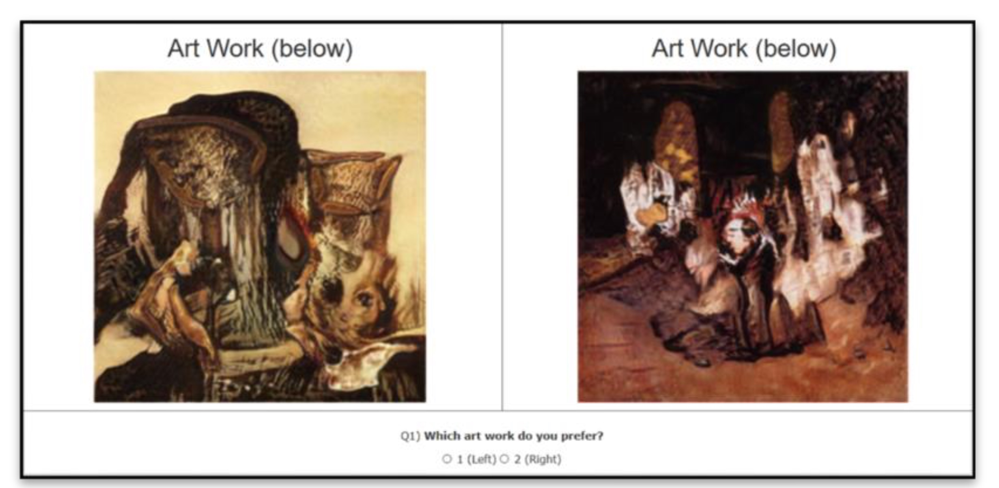

Creative Walk Adversarial Networks
Novel Art Generation with Probabilistic Random Walk Deviation from Style Norms
ICCC 2022
- Divyansh Jha*
- Kai Yi
- Ivan Skorokhodov
- Mohamed Elhoseiny* King Abdullah University of Science and Technology (KAUST)
Abstract
We propose Creative Walk Adversarial Networks (CWAN) for novel art generation. Quality learning representation of unseen art styles is critical to facilitate generation of new meaningful artworks. CWAN learns an improved metric space for generative art by exploring unseen visual spaces with probabilistic random walks. CWAN constructs a dynamic graph that includes the seen art style centers and generated samples in the current minibatch. We then initiate a random walk from each art style center through the generated artworks in the current minibatch. As a deviation signal, we encourage the random walk to eventually land after T steps in a feature representation that is difficult to classify as any of the seen art styles. We investigate the ability of the proposed loss to generate meaningful novel visual art on the WikiArt dataset. Our experimental results and human evaluations demonstrate that CWAN can generate novel art that is significantly more preferable compared to strong state-of-the-art methods, including StyleGAN2 and StyleCAN2.
Art images on left with orange borders are generated using Creative Walk Adversarial Networks. The right part shows the Nearest Neighbors (NN) from the training set on the WikiArt dataset (with green borders), which are different indicating our generations’ novelty. Nearest neighbor distance is computed on ResNet-18 space (He et al. 2016).
Motivation
- Creative art spaces have been explored in previous works like Creative Adversarial Networks. The spaces explored in those works are local in nature i.e they are based on a per example basis. Also there was no supervision in the deviation loss exploring more the creative space. Rather, Creative Walks takes a global view of the data manifold. Creative Walks can be connected to recent advances in semi-supervised learning, that leverage unlabeled data within the training classes. The deviation is guided and is based on the current minibatch. The goal is the landing representation to be distant and distinguishable from the seen art style centers but still be likeable.
- We also want to compare the performance of this random walk based deviation loss to the existing works and compare their performances.
Contributions
- We propose Creative Walk Adversarial Networks(CWAN) for novel art generation. CWANs augment state-of-the-art adversarial generative models with a Creative Walk loss that learns an improved metric space for novel art generation.
- The loss generatively explores unseen art discriminatively against the existing art style classes. The augmented loss is unsupervised on the generative space and can be applied to any GAN architectures; e.g., DCGAN (Radford, Metz, and Chintala 2016), StyleGAN (Karras, Laine, and Aila 2019a), and StyleGAN2 (Karras et al. 2020).
- We show that Creative Walk Adversarial Networks helps understand unseen visual styles better, improving the generative capability in unseen space of liked art as compared to state-of-the-art baselines including StyleGAN2 (Karras et al. 2020) and StyleCAN2 (Jha, Chang, and Elhoseiny 2021)
StyleCWAN
Creative Walk loss starts from each seen style class center (i.e., pi). It then performs a random walk through generated examples of hallucinated unseen classes using G(z) for T steps. The landing probability distribution of the random walk is encouraged to be uniform over the seen classes. For careful deviation from seen classes, the generated images are encouraged to be classified as real by the Discriminator D. H indicates relative entropy.Some sample generations from StyleGAN1 + CWAN
Some sample generations from StyleGAN2 + CWAN
Likeability experiments

- How much do you like this image? (on a scale of 5)
- Do you think this image was created by artist or generated by computer?
Results
Emotion experiments

Results
Distribution of emotional responses for generated art from StyleGAN1 + CWAN. Example image for fear, awe, and contentment is shown. The box beneath shows the most frequent words used by evaluators to describe their feeling. These responses were collected from a survey on Amazon Mechanical Turk.
Comparison analyses
Results
Wundt Curve Approximation
Key observations
- The creative walk loss used in CWAN has performed better than CAN on two SOTA base architectures i.e. StyleGAN1 and StyleGAN2.
- We find that the artworks generated by our proposed CWAN model are more likeable than those artworks by CAN in all the evaluation groups.
- We see that artworks by CWAN have a significantly higher percentage of people giving a rating of 5 and least amount for people giving a rating of 1.
- We approximated the Wundt Curve from art- works generated from CWAN.
Citation
If you find our work useful in your research, please consider citing:
@article{djcwan,
title={Creative Walk Adversarial Networks: Novel Art Generation with Probabilistic Random Walk Deviation from Style Norms},
author={Jha, Divyansh and Yi, Kai and Skorokhodov, Ivan and Elhoseiny, Mohamed},
journal={The International Conference on Computational Creativity (ICCC)},
year={2022}
}